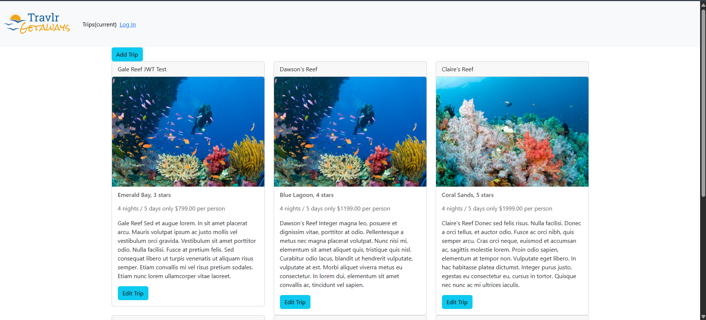
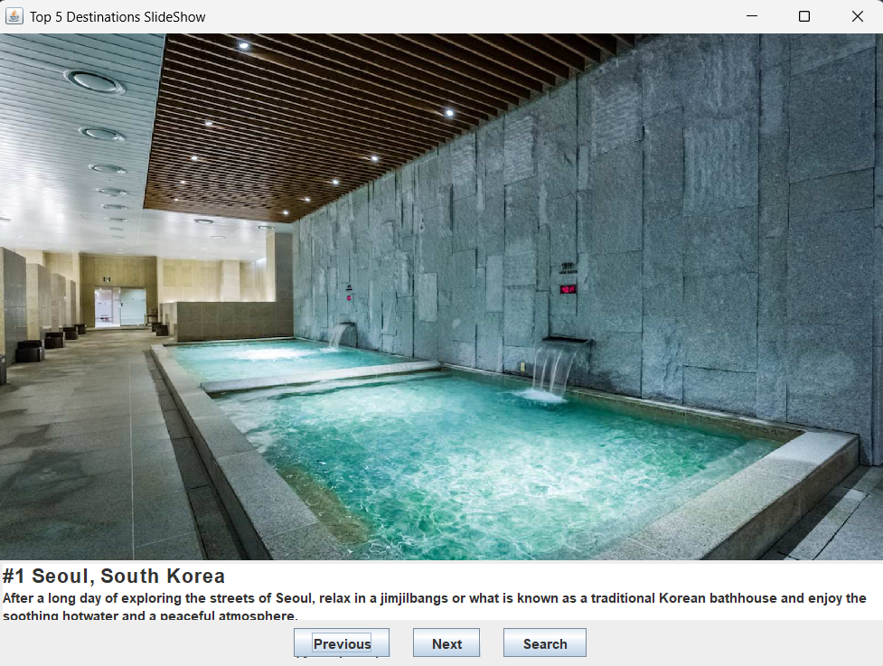

Welcome
Welcome to my Computer Science ePortfolio. This website showcases my academic projects, technical skills, and professional growth throughout my Computer Science program at Southern New Hampshire University.
About This Portfolio
As part of my CS 499 Computer Science Capstone, this portfolio demonstrates my knowledge and skills in software engineering and design, algorithms and data structures, and databases.
I selected three projects from previous courses to review, improve, and include in my portfolio. Each enhancement demonstrates how I can apply what I have learned throughout my program to improve existing software.
Professional Self-Assessment
This section will include my professional self-assessment, reflecting on my growth throughout the Computer Science program, the skills I have developed, and how my coursework has prepared me for future opportunities.
Professional self-assessment will be added as part of the final capstone submission.
Capstone Code Review
For my CS 499 capstone, I completed a code review covering three projects from previous courses. During the review, I examined the existing code, discussed areas that could be improved, and explained my planned enhancements.
The video covers software engineering and design, algorithms and data structures, and databases.
Code Review Video
Full Stack Development
Enhancement One: Software Engineering and Design
Travlr Getaways
Travlr Getaways is a full-stack travel application developed using the MEAN stack, which includes MongoDB, Express, Angular, and Node.js.
For this enhancement, I improved the Travlr Getaways application by adding reusable form validation, strengthening backend input validation, improving API responses, and updating authentication error handling. I also completed manual and automated testing to verify that the changes worked correctly. These improvements made the application more consistent, reliable, and easier to maintain.

Travlr Getaways Angular admin application displaying travel packages and trip management features.
Original Code
This is the original Travlr Getaways application I developed during CS 465 using MongoDB, Express, Angular, and Node.js. It includes the travel package listings and administrative trip management features before my capstone improvements. This version provides a starting point for comparing the original application with my enhanced code.
Download Original Code (ZIP)Enhanced Code
This version includes the software engineering improvements I completed during CS 499. I added reusable form validation, strengthened backend input validation, improved API responses and authentication error handling, and tested the updated functionality. These changes help the application handle invalid information more consistently and make the code easier to maintain.
Download Enhanced Code (ZIP)Enhancement Narrative
This narrative explains why I selected Travlr Getaways for my software engineering and design enhancement. It describes the improvements I made, the decisions and challenges involved, and what I learned while strengthening validation, error handling, and testing. It also connects my work to the computer science course outcomes.
Download Enhancement One Narrative (Word)Updated Pseudocode
This document outlines the logic behind the updated Travlr Getaways application. It helps explain the enhanced processes, including input validation and error handling, in a step-by-step format without requiring visitors to read through the full source code.
Download Updated Pseudocode (Word)Testing Documentation
This document records how I checked the changes made to Travlr Getaways. It provides testing steps, expected and actual results, and supporting evidence for features such as form validation, API responses, authentication error handling, and automated tests. It shows how I verified the enhancements rather than relying only on the finished application.
Download Testing Documentation (Word)Software Development Lifecycle
Enhancement Two: Algorithms and Data Structures
Top 5 Destinations Java Slideshow
The Top 5 Destinations Java Slideshow is a Java Swing application that I originally developed during CS 250: Software Development Lifecycle. The application displays five travel destinations with images and descriptions, allowing users to navigate between destinations using the Next and Previous buttons.
For this enhancement, I focused on improving how the application organizes, searches, sorts, and processes destination information. I created a Destination class and implemented an ArrayList and HashMap to manage destination records. I also added search functionality, implemented linear search and HashMap lookup, and compared insertion sort with Java's built-in sorting method. To evaluate the efficiency of these algorithms, I conducted performance testing using datasets of 100, 1,000, and 10,000 records. I maintained the original slideshow navigation while incorporating these improvements. This enhancement helped me better understand how different algorithms and data structures can affect application performance, efficiency, and organization.

The enhanced Top 5 Destinations Java Slideshow displaying Seoul, South Korea, with the original slideshow navigation and newly added search functionality.
Original Code
I originally developed this application during CS 250 as a simple slideshow featuring five travel destinations. It uses Java Swing and CardLayout to display images and descriptions while allowing users to move between destinations. At the time, the application focused mainly on displaying information and providing basic navigation. I included the original project so visitors can see how the application worked before I added the algorithms and data structures enhancements.
Link to original Java slideshow code.
Enhanced Code
I expanded the slideshow beyond its original functionality by improving how destination information is stored, searched, and sorted. I used an ArrayList to maintain the destination records and a HashMap to retrieve information by destination name. I also implemented linear search, HashMap lookup, insertion sort, and Java's built-in sorting method. By comparing these methods using different dataset sizes, I was able to see how their performance changed as the amount of information increased. I kept the original slideshow navigation working while incorporating these new features.
Link to enhanced Java slideshow code.
Enhancement Narrative
In this narrative, I explain why I chose the Java slideshow for my algorithms and data structures enhancement, what improvements I made, and why I decided to use specific algorithms and data structures. I also discuss the challenges I encountered throughout the enhancement process and what I learned from comparing different searching and sorting methods. The narrative reflects on my growth throughout the project and explains how the completed enhancement connects to the computer science course outcome.
Enhancement Two narrative will be added here.
Updated Pseudocode
As I worked through the enhancement, I updated my original pseudocode to reflect the changes I made to the application. The updated version breaks down how destination information is organized using an ArrayList and HashMap, how the searching and sorting methods work, and how the original slideshow navigation is maintained. I also included the steps used to compare algorithm performance with different dataset sizes. This provides a clearer understanding of the logic behind my enhancements without having to read through the entire Java code.
Link pseudocode doc here.
Testing Documentation
Throughout the enhancement process, I tested the application to make sure the new features worked correctly without affecting its original functionality. I documented the testing procedures, expected and actual results, test outcomes, and screenshot evidence. In addition to testing slideshow navigation, searching, and sorting, I compared the performance of different algorithms using datasets of 100, 1,000, and 10,000 records. Including this documentation shows the steps I took to verify my improvements and evaluate the performance of the enhanced application.
Link to testing doc here.
Mobile Architecture and Programming
Enhancement Three: Databases
Android Inventory App
The Android Inventory App is a mobile application that allows users to create an account, log in, and manage inventory items stored in a local database.
For this enhancement, I will focus on improving database functionality, data management, validation, and the reliability of inventory operations.
Original Code
Link to original Android Inventory App code.
Enhanced Code
Link to enhanced Android Inventory App code.
Enhancement Narrative
Enhancement Three narrative will be added here.